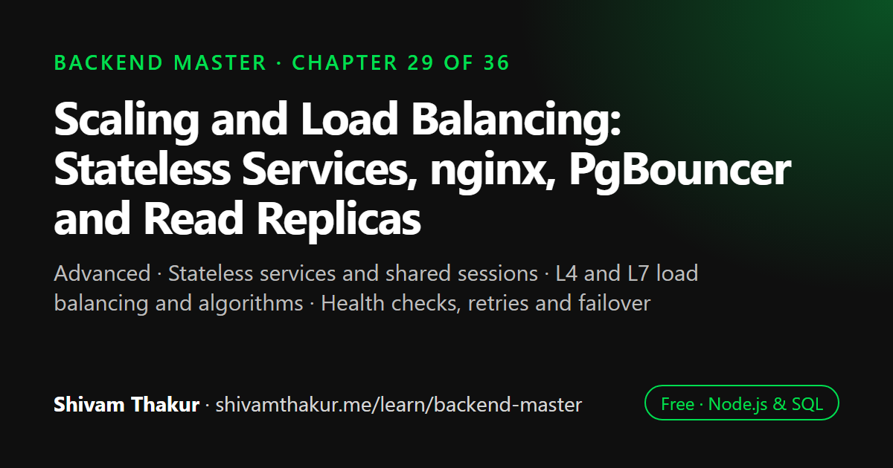

Chapter 29 of 36 · Advanced
Scaling and Load Balancing: Stateless Services, nginx, PgBouncer and Read Replicas
Scaling and Load Balancing — From One Server to Many

Scaling mostly means removing what stops you adding a second server, usually state. This chapter puts three Node instances behind nginx, measures algorithms, failover, sessions and throughput scaling, shows PgBouncer serving 300 clients with 10 database connections and its session-state trap, and explains read replicas and autoscaling.
In this chapter you will learn
- Stateless services and shared sessions
- L4 and L7 load balancing and algorithms
- Health checks, retries and failover
- Connection pooling with PgBouncer
- Read replicas, replication lag and capacity planning
29.0 Why This Chapter Matters
Your ShopLine runs beautifully on one laptop. Then a marketing campaign lands and ten thousand people arrive at once. One Node process, which uses one CPU core (Chapter 5), saturates; response times climb; timeouts begin; the retry storm of Chapter 26 starts. Scaling is the set of techniques for serving more load: more users, more data, more requests per second.
The central insight of this chapter is that scaling is mostly about removing the one thing that stops you from adding a second server. Usually that thing is state: a session in process memory, a file on local disk, a cache only one server can see, a cron job that assumes it is alone. We'll prove that with a real nginx load balancer in front of three Node instances.
You will learn:
- Vertical vs horizontal scaling, and why horizontal needs stateless services.
- Load balancers: L4 vs L7, algorithms (round-robin, least-connections, hash), health checks, and what happens when an instance dies mid-traffic.
- Sessions and state across instances (our measured result: 71% of requests failed with in-memory sessions).
- Connection management: why a database cannot take 300 connections, and what PgBouncer does (and breaks).
- Read replicas and replication lag (and the read-your-writes trap).
- Autoscaling, capacity planning, and the law of diminishing returns (Amdahl's law).
29.1 Scaling Vocabulary
| Term | Meaning |
|---|---|
| Vertical scaling (scale up) | A bigger machine: more CPU/RAM/disk |
| Horizontal scaling (scale out) | More machines running the same service |
| Throughput | Requests handled per second |
| Latency | Time per request (look at p95/p99, Chapter 25) |
| Capacity | The load a system handles within its SLO |
| Bottleneck | The one resource that limits the whole system right now |
| Stateless | Any instance can serve any request; no instance remembers anything between requests |
| Elasticity | Adding/removing capacity automatically with demand |
Vertical vs horizontal
| Vertical | Horizontal | |
|---|---|---|
| How | Bigger server | More servers + load balancer |
| Code changes | None | Must be stateless; cope with many instances |
| Limit | The biggest machine you can buy | Practically very high |
| Failure | One machine = single point of failure | Survives instance loss (if designed for it) |
| Cost curve | Gets expensive quickly at the top | Roughly linear; cheap commodity machines |
| Downtime to scale | Often (restart/resize) | None (add instances) |
Practical advice: scale vertically first (it's the cheapest engineering effort; a bigger database often postpones a hard problem for years), but design your application tier to be horizontally scalable from the start, because that costs little if you do it early and a lot if you retrofit.
Node-specific note
A single Node process uses one core for your JavaScript (Chapter 5). On a 16-core server, run 16 processes (the cluster module, PM2, or 16 containers), or you pay for cores you never use. Horizontal scaling of Node starts on one machine.
29.2 The Stateless Service
A service is stateless if a request can be handled by any instance, because everything needed lives either in the request or in shared storage (database, Redis, object storage). Common state that breaks scaling, and where to move it:
| State kept in the instance | What goes wrong | Move it to |
|---|---|---|
| Sessions in memory | User "logged out" when the next request hits another instance | Redis/DB session store, or signed tokens (Chapter 21) |
| Uploaded files on local disk | File missing on other instances | Object storage (Chapter 20) |
| In-process caches | Inconsistent data across instances | Redis, plus broadcast invalidation (Chapter 27) |
| In-memory queues/jobs | Lost on restart | A durable queue (Chapter 28) |
| Cron jobs in every instance | Runs N times | Claim/lock or a single scheduler (Chapter 28) |
| WebSocket connections | Messages must reach the instance that holds the socket | Pub/sub fan-out (Redis) or a sticky + broadcast design (Chapter 10) |
| Local config/secrets | Drift between instances | Environment/secret manager (Chapters 4, 23) |
| Rate-limit counters in memory | Each instance counts separately (limit × N) | Redis counters (Chapter 19) |
Measured: in-memory vs Redis sessions across 3 instances
Three identical Node instances sit behind nginx with round-robin. A user "logs in" (the instance stores a session) and then makes three more requests. 30 users × 3 follow-up requests:
in-memory sessions 30 users x 3 follow-up requests: logged in 26, "logged out" 64 (71% of requests fail)
Redis sessions 30 users x 3 follow-up requests: logged in 90, "logged out" 0 (0% of requests fail)
in-memory + ip_hash logged in 90, failed 0 <- works, UNTIL that instance restarts or the pool changesWith in-memory sessions the login succeeded on one instance and two thirds of follow-up requests landed on instances that had never heard of the user (71% failed overall; the ones that "worked" happened to hit the same instance). With the session in Redis, every instance saw it. Sticky routing (ip_hash) also "fixes" it by sending a client to the same instance each time, but it's a trap: when that instance restarts, deploys, or is removed, all its users lose their sessions, load can become uneven, and many users behind one NAT address all pile on one instance (§29.3). Prefer shared state or tokens; use stickiness only as an optimisation, never for correctness.
The twelve-factor view
The twelve-factor app principles (12factor.net) formalise this: config in the environment, stateless processes, backing services as attached resources, logs as event streams, disposability (fast startup, graceful shutdown), dev/prod parity. A service that follows them scales and deploys almost for free.
29.3 Load Balancers
A load balancer receives client traffic and spreads it across backend instances, health-checking them and removing the dead ones.
┌──────────────┐ ┌─► instance A
clients ──► DNS ──► │ LOAD BALANCER│────────┼─► instance B
│ (nginx, HAProxy, └─► instance C
│ AWS ALB/NLB, Envoy)
└──────────────┘Layer 4 vs Layer 7
| L4 (transport: TCP/UDP) | L7 (application: HTTP) | |
|---|---|---|
| Sees | IPs and ports | URLs, headers, cookies, methods |
| Speed | Very fast, minimal CPU | Slower (parses HTTP) |
| Features | Connection balancing, TLS passthrough | Path routing (/api, /static), TLS termination, header rewriting, caching, retries, rate limits, WAF |
| Examples | AWS NLB, HAProxy (tcp mode), LVS | nginx, AWS ALB, Envoy, Traefik, HAProxy (http mode) |
Most web backends use an L7 balancer, which also terminates TLS (the certificate lives on the balancer; backends speak plain HTTP on a private network, Chapter 2) and sets X-Forwarded-For/X-Forwarded-Proto headers (configure Express trust proxy accordingly, or your rate limiter and logs see only the balancer's address; Chapter 23).
Our test setup
Three Node instances (A, B, C) on different ports; nginx in Docker with named upstreams (full config in lb-lab.mjs):
upstream rr { server 192.168.65.254:54361; server 192.168.65.254:54362; server 192.168.65.254:54363; keepalive 64; }
upstream lc { least_conn; server …; keepalive 64; }
upstream iph { ip_hash; server …; }
upstream rr_fo { server … max_fails=1 fail_timeout=3s; keepalive 64; }
server { listen 8080;
proxy_http_version 1.1; proxy_set_header Connection ""; proxy_connect_timeout 1s;
location /rr/ { proxy_pass http://rr/; proxy_next_upstream off; }
location /fo/ { proxy_pass http://rr_fo/; proxy_next_upstream error timeout http_502 http_503; proxy_next_upstream_tries 3; }
}A networking gotcha that cost me an afternoon of confusing results: I first pointed nginx at host.docker.internal. That name resolves to both an IPv6 and an IPv4 address on Docker Desktop; nginx made two peers per server, and the IPv6 one wasn't reachable, so a steady 2% of requests returned 502 even though all instances were healthy. Using the IPv4 address (192.168.65.254) removed the errors. (PgBouncer, similarly, couldn't resolve the name at all.) Lesson: a load balancer's upstream definition decides how many "servers" it thinks it has; check DNS results (A and AAAA), and check the error rate on a healthy system before trusting any experiment.
Algorithms
300 sequential requests to 3 identical instances:
round-robin -> A:100 B:100 C:100
least_conn -> A:101 B:100 C:99
ip_hash -> B:300 <- every request from the same client address goes to ONE instance| Algorithm | How it picks | Good for | Watch out |
|---|---|---|---|
| Round-robin | A, B, C, A, B, C… | Equal instances and similar requests | Ignores load and slow instances |
| Weighted round-robin | Proportional to weights | Mixed instance sizes, canary releases (5% to new version) | Manual tuning |
| Least connections | Instance with fewest active requests | Variable request durations | Needs connection counting; new instances get a burst |
| IP hash / consistent hash | Hash of client IP (or a header/cookie/URL) | Session affinity, cache locality | Uneven when many clients share an IP (NAT, corporate proxy, mobile carriers, or, here, one Docker NAT address, so 100% went to one instance) |
| Random (power of two choices) | Pick two at random, choose the less loaded | Large fleets with cheap, good balance | Needs load info |
A slow instance: round-robin vs least-connections
Instance C was made slow (+300 ms per request); 30 concurrent clients sent 600 requests:
round-robin p50 96 ms p99 471 ms | 600 requests in 3.8 s | share A:200 B:200 C:200
least_conn p50 114 ms p99 583 ms | 600 requests in 3.5 s | share A:268 B:270 C:62Round-robin kept feeding the slow instance a third of the traffic. least_conn noticed it had requests piling up and sent it only 62 requests (10%), finishing the whole batch sooner (3.5 s vs 3.8 s). But the p50 and p99 were not better in this run (they were slightly worse); with only 30 clients and a 300 ms slowdown the difference is small and the measurements are noisy. The honest summary: least_conn redistributes load sensibly, its advantage grows with greater variance in request time and larger fleets, and you should measure rather than assume.
Health checks and failover: an instance dies mid-traffic
Six clients sent ~200 requests/second; instance B was killed after one second.
no failover (proxy_next_upstream off) 622 requests, ERRORS 2 (0.3%) | A:271 B:77 C:272 ERR502:2
failover enabled (/fo) 422 requests, ERRORS 0 (0.0%) | A:180 B:62 C:180Without failover, the requests that were routed to B in the instant after it died failed (502). With proxy_next_upstream (retry the request on another instance when the first fails to connect or errors) plus passive health checking (max_fails=1 fail_timeout=3s: stop sending traffic to an instance that just failed), there were zero errors: nginx quietly retried on A or C and marked B as down. The numbers are small because B died cleanly and nginx noticed fast, but the mechanism is what matters: retries and health checks at the load balancer turn instance crashes into non-events, for idempotent requests (retrying a non-idempotent POST risks double execution: nginx by default won't retry non-idempotent methods after the request was sent; Chapters 16 and 26).
Types of health check:
- Passive: infer health from real traffic (failures/timeouts), as nginx open-source does.
- Active: the balancer probes
/readyz(Chapter 25) every few seconds (nginx Plus, HAProxy, ALB, Kubernetes). - Readiness vs liveness: remove an instance from rotation (readiness) without restarting it (liveness), and drain (finish in-flight requests) on shutdown (Chapter 25).
Does adding instances add throughput?
A CPU-bound endpoint (20 ms of CPU per request), 40 concurrent connections, 6 seconds, through nginx:
1 instance(s): 46 req/s | latency p50 841 ms, p99 1148 ms
2 instance(s): 90 req/s | latency p50 424 ms, p99 817 ms
3 instance(s): 137 req/s | latency p50 285 ms, p99 434 ms
speed-up: 1x -> 1.00x, 2x -> 1.95x, 3x -> 2.96x (4 cores shared with nginx, Docker and the load generator)Near-linear scaling: because the instances are independent and stateless, doubling them roughly doubled throughput and halved latency (the queueing delay at 40 connections vs one 20 ms core: 40 × 20 ms ≈ 800 ms ≈ the 841 ms measured with one instance). This is the ideal case. It stops being linear the moment the instances share a bottleneck (the database, §29.4) or the machine runs out of cores (a 4th instance here would have competed with nginx and the load generator).
Other load-balancing layers
- DNS load balancing (multiple A records, GeoDNS, Route 53 latency routing): coarse, cached by clients; great for multi-region.
- Client-side balancing (gRPC, service discovery with Consul/Kubernetes): the client chooses among instances. (Not run.)
- Global/anycast (CDNs, Cloudflare, AWS Global Accelerator) route users to the nearest healthy region.
- Managed: AWS ALB/NLB, GCP Load Balancing, Azure Front Door; Kubernetes
Service/Ingress(Chapter 31). (Not run.)
29.4 The Database Becomes the Bottleneck
Scaling the stateless app tier is easy. The database is the shared, stateful piece, so it's where scaling gets hard. Work through the cheap fixes first, in this order:
- Fix the queries: indexes, N+1, pagination (Chapter 15). The cheapest 100×.
- Cache hot reads (Chapter 27).
- Move work off the request (Chapter 28).
- Manage connections (below).
- Scale vertically (more CPU/RAM/IOPS).
- Read replicas for read-heavy load (§29.5).
- Partition/shard write-heavy or huge data (§29.6; Chapter 30).
Connection management and PgBouncer (tested)
Every PostgreSQL connection is a separate operating-system process costing several megabytes, and the server has a hard max_connections (100 by default). With 10 app instances each holding a pool of 20 connections, you've used 200 connections: more than the database allows. We tested the failure on our container (max_connections = 100), opening 300 simultaneous client connections:
direct to PostgreSQL : 98 connected, 202 REFUSED ("sorry, too many clients already")
through PgBouncer : 300 connected, 0 refused | real PostgreSQL backends in use right now: 9
300 clients each run a query at the same time:
all 300 answered in 6283 ms using 10 PostgreSQL backendsPgBouncer, a lightweight connection pooler, sat in front: 300 client connections were multiplexed onto a pool of 10 real backends (POOL_MODE=transaction, DEFAULT_POOL_SIZE=10). All 300 clients connected and got answers, using 10 backends. (The 6.3 s is the cost of funnelling 300 simultaneous 50k-row counts through 10 backends: connection pooling protects the database, it doesn't make it faster.)
Pooling modes: session (a client keeps a server connection for its whole session: safe, saves little), transaction (a server connection is lent only for the duration of a transaction: the usual choice, high multiplexing), statement (rarely used).
Throughput: a pooler is not a speed-up
200 concurrent workers, 25 short queries each:
direct, app pool of 20 connections 781 tx/s | p50 180 ms p99 1241 ms | errors 0
direct, app pool of 90 connections 640 tx/s | p50 217 ms p99 1527 ms | errors 24
via PgBouncer, app pool of 200 (pool_size 10) 379 tx/s | p50 484 ms p99 1482 ms | errors 0Three honest lessons: (1) a pool of 20 beat a pool of 90: on a 4-core machine, more concurrent backends mean more context switching and lock contention, not more work (a good rule of thumb is a pool near cores × 2 + effective spindles; the 24 errors for 90 were "too many clients" hits, because other connections also counted against the limit). (2) PgBouncer reduced throughput here (379 vs 781 tx/s): it adds a network hop (through Docker on Windows) and a 10-connection ceiling. Its purpose is connection-count control, not speed. (3) The answer to "I have 50 app instances" is a small pool per instance or PgBouncer, not a pool of 100 per instance.
The price: session state breaks in transaction mode
In transaction pooling, two different clients can share one server connection (between their transactions), so anything that lives in the session leaks or disappears:
client A's query ran on backend 1343; client B's query ran on backend 1343 (the SAME server connection, reused between two different clients)
A runs "SET app.tenant_id = 'tenant-A'" (session level); B then reads it: B SAW tenant-A in 40 of 40 tries <- a Chapter 22 RLS bug
with transaction-local set_config(..., true): B saw tenant-A in 0 of 40 tries <- safeA session-level SET made by client A was visible to client B 40 out of 40 times: with Row-Level Security (Chapter 22) that would show one tenant's data to another. Things that don't survive transaction pooling: session-level SET/RESET, session advisory locks (Chapters 14, 16), LISTEN/NOTIFY, WITH HOLD cursors, temporary tables, and (depending on version/config) protocol-level prepared statements (PgBouncer ≥ 1.21 can support them with max_prepared_statements). Use SET LOCAL/set_config(…, true) inside transactions and avoid session features, or use session pooling for the few connections that need them.
29.5 Read Replicas and Replication Lag (not run: written from documentation)
When reads dominate (browsing the catalogue vs placing orders), add read replicas: copies of the database that stream changes from the primary and serve read-only queries.
writes ──► PRIMARY ──WAL stream──► REPLICA 1 ◄── reads
└──────────► REPLICA 2 ◄── readsPostgreSQL's streaming replication ships the write-ahead log (Chapter 12) to standbys that continuously replay it; a standby accepts only reads (pg_is_in_recovery() is true; writes fail with "cannot execute INSERT in a read-only transaction"). Cloud databases (RDS, Cloud SQL, Aurora) provision replicas with a click.
The catch: replication lag and read-your-writes
Replication is normally asynchronous: the primary commits, then streams the change; the replica applies it a moment later (typically milliseconds, but seconds or minutes under heavy write load or a network problem). So:
A customer adds an item to the cart (write → primary), the page reloads and reads the cart from a replica, and the item isn't there yet.
This is a read-your-writes (read-after-write) consistency violation. (I wrote a lab to measure lag and the stale-read rate, but never got the replica running, so I have no measured figures; expect both to be small on an idle system and to grow with write load.)
Remedies, from simplest to most precise:
- Read from the primary after a write: for a short window (say 5 s) or for the specific entities the user just changed, route that user's reads to the primary (a flag in the session/cookie, or per-request routing).
- Route by criticality: cart, checkout, order status, account → primary; catalogue, search, reports, recommendations → replicas.
- Wait for the replica to catch up to the write's position: record the primary's
pg_current_wal_lsn()after the write; before reading from the replica, wait until itspg_last_wal_replay_lsn()≥ that LSN (or usepg_wal_lsn_diff). Precise but adds complexity. - Synchronous replication (
synchronous_commit = remote_apply): the primary waits for replica(s) before acknowledging a commit: no stale reads, but higher write latency and reduced availability if the replica is down. - Monitor lag (
pg_stat_replication,now() - pg_last_xact_replay_timestamp()) and alert; remove a lagging replica from rotation (Chapter 25).
Other gotchas: long-running queries on a replica can be cancelled by replay conflicts (tuning: hot_standby_feedback, max_standby_streaming_delay); a replica is also a failover candidate (promotion; split-brain risks with a manual process; use Patroni/managed HA; Chapter 30); and replicas don't scale writes.
29.6 Scaling Writes and Data: Partitioning and Sharding
When one primary can't handle the write volume or the dataset size:
| Technique | What | Notes |
|---|---|---|
| Vertical scale the primary | Bigger instance, faster disks | Simplest; has a ceiling |
| Partitioning (single server) | Split a big table by range/hash (Chapter 20: time partitions) | Maintenance and pruning wins; not more write capacity per se |
| Sharding (multiple servers) | Split data across databases by a shard key (e.g., tenant_id, user_id) |
Writes scale horizontally; cross-shard queries/transactions become hard |
| Functional split | Different databases for different domains (orders vs catalogue vs analytics) | Matches microservice boundaries (Chapter 33) |
| Distributed SQL/NoSQL | CockroachDB, YugabyteDB, Spanner, MongoDB sharding, Cassandra, DynamoDB | Built-in sharding with tradeoffs (Chapter 30) |
Choosing a shard key is the critical decision: it should spread load evenly (avoid hot shards), keep most queries within one shard (a customer's orders together), and be immutable. Consistent hashing (Chapter 30) lets you add shards while moving only a fraction of the data. Re-sharding later is painful: delay sharding as long as vertical scaling, caching, replicas and good schema design allow. (None of these were run in this chapter.)
29.7 Autoscaling and Capacity Planning
Autoscaling
Add/remove instances automatically based on a signal. Good signals (from Chapter 25):
- CPU utilisation (simple; fine for CPU-bound services).
- Requests per instance or queue depth / oldest-job age (better for workers: scale on backlog, Chapter 28).
- Event-loop lag (Node saturation) and p95 latency.
- Schedules (predictable daily/seasonal peaks).
Rules: scale out fast, in slowly (to avoid flapping); set min and max (max protects your database and your bill); allow for warm-up time (an instance isn't useful until it's started, connected, and cache-warm: seconds to minutes) so autoscaling reacts late to spikes: pre-scale for known events (a sale); and remember scaling the app tier shifts the bottleneck to the database (more instances → more connections → exceed max_connections; pool limits, PgBouncer, §29.4). (Kubernetes HPA, AWS Auto Scaling groups: described, not run; Chapter 31.)
Capacity planning, with a back-of-envelope
Suppose a peak of 500 requests/second, each costing about 20 ms of CPU in Node:
- One core serves ≈
1000 ms / 20 ms = 50 req/s(we measured 46 req/s through nginx). - At 500 req/s you need ≈ 10 cores; with a 60% target utilisation, ≈ 17 cores, i.e., ~5 instances × 4 cores.
- N+1 / N+2 redundancy: size for the peak with one or two instances down (deploys, failures, an availability zone outage).
- Database: 500 req/s × 3 queries = 1,500 queries/s; at ~1 ms each that's ~1.5 cores of DB CPU, comfortable if indexed (Chapter 15).
Always load-test (Chapter 24) to find the actual saturation point instead of trusting arithmetic, and keep headroom (running at 90% utilisation leaves no room for a spike and makes latency explode: queueing theory says latency grows sharply as utilisation approaches 100%).
Amdahl's law and the Universal Scalability Law
If a fraction s of the work is serial (can't be parallelised: a database lock, a single queue, one hot row as in Chapter 24's load test), the maximum speed-up with N workers is 1 / (s + (1 − s)/N). With 5% serial work, 100 servers give at most ~17×, and no amount of hardware passes 20×. The USL adds a coherence (crosstalk) cost that makes throughput decrease beyond a point (we saw it: a pool of 90 was slower than a pool of 20). Find the serial fraction and the shared resource; scaling is the art of shrinking them.
29.8 ShopLine at 100× Scale: An Architecture (design; not built or run here)
users ─► CDN (static + cacheable API, Ch 27) ─► L7 load balancer (TLS) ─► N × stateless API instances (autoscaled)
│ │
sessions/cache/rate-limit: Redis ├─► PgBouncer ─► PostgreSQL primary (writes, critical reads)
queues + workers (Ch 28) │ └► read replicas (catalogue, search, reports)
object storage (images, invoices, Ch 20) └─► search engine / analytics store (Ch 20)Checklist before scaling out: stateless instances (sessions in Redis, files in object storage); config from the environment; graceful shutdown and readiness (Chapter 25); a connection budget (instances × pool ≤ max_connections, or PgBouncer); idempotent jobs and a claimed scheduler (Chapter 28); read-your-writes policy for replicas; trust-proxy configured; and load tests that prove each step.
29.9 Edge Cases and Gotchas Checklist
- State in instance memory (sessions, caches, counters, uploads, cron, WebSocket rooms).
- Sticky sessions used for correctness; NAT/proxy making
ip_hashunbalanced; no plan for instance restarts. - Load balancer upstreams resolving to unreachable addresses (IPv6/AAAA surprises); no baseline error check on a healthy system.
- No health checks, no drain on deploy, no retry of idempotent requests; retrying non-idempotent ones.
- Forgetting
trust proxy/forwarded headers; losing real client IPs (rate limiting, logs, geo). -
instances × pool sizelarger thanmax_connections; pools of 100 per instance. - Transaction pooling with session
SET, advisory locks,LISTEN, temp tables, or incompatible prepared statements. - Assuming a pooler adds throughput; assuming more connections adds throughput.
- Reading from replicas right after writes; no lag monitoring; replica conflicts cancelling long queries.
- Sharding too early; poor shard key (hot shard, cross-shard joins everywhere).
- Autoscaling on a lagging signal; no max; no warm-up time; the database as the unscaled bottleneck.
- Capacity planned for averages, not peaks, with no N+1 headroom; no load test.
29.10 Chapter Summary
- Scale vertically first, but design the app tier to scale horizontally: that requires stateless instances (sessions, files, caches, counters, schedules, sockets in shared services).
- Tested: with 3 instances behind nginx, in-memory sessions failed 71% of follow-up requests; Redis sessions failed 0%;
ip_hash"worked" but is fragile. - Load balancers: L4 vs L7; algorithms (round-robin 100/100/100;
least_connsent a slow instance 62 of 600 requests vs 200 under round-robin;ip_hashsent 100% to one instance behind a shared NAT address). Failover withproxy_next_upstream+ passive health checks made an instance death a 0-error event. Throughput scaled 1.00× → 1.95× → 2.96× with 1, 2, 3 instances. An upstream DNS name resolving to an unreachable IPv6 address caused a steady 2% of 502s: check your baseline. - Database connections: direct connections stopped at 98 of 300; PgBouncer served all 300 with 10 backends. It reduced throughput here (379 vs 781 tx/s), a pool of 20 beat a pool of 90, and in transaction mode a session-level
SETleaked to another client 40 of 40 times: useset_config(…, true). - Read replicas (not run): scale reads, introduce replication lag and read-your-writes problems (fixes: read the primary after writes, route by criticality, wait for LSN, synchronous replication).
- Sharding is the last resort; pick the shard key carefully. Autoscale on good signals with min/max and warm-up; plan capacity with headroom and N+1; remember Amdahl's law.
29.11 Revision Notes
- Stateless: sessions → Redis/tokens; files → object storage; caches → Redis + invalidation; cron → claimed; sockets → pub/sub.
- L7 balancer: TLS termination, path routing, health checks,
X-Forwarded-*+trust proxy. - Algorithms: round-robin, weighted, least-conn, hash (NAT trap), power-of-two-choices.
- Failover = health checks + retry of idempotent requests on another instance.
- DB:
instances × pool ≤ max_connections; PgBouncer transaction mode → no session state;SET LOCAL. - Pool size ≈ cores×2 (not hundreds); more connections ≠ more throughput.
- Replicas: async lag; read-your-writes remedies; monitor lag.
- Autoscale: out fast/in slow, min/max, warm-up, pre-scale events; capacity = peak ÷ per-instance rate ÷ target utilisation + N+1.
- Amdahl: speed-up ≤ 1/s.
29.12 Mind Map (ASCII)
SCALING
│
┌────────────┬──────────────┼───────────────┬───────────────┐
APP TIER LOAD BALANCER DATABASE ELASTICITY LIMITS
│ │ │ │ │
stateless L4 / L7 connections autoscale Amdahl / USL
sessions→Redis algorithms PgBouncer signals hot rows
files→objects health checks read replicas min/max bottleneck moves
cron claimed failover lag / RYW warm-up load test
12-factor trust proxy sharding (last) capacity N+129.13 Cheat Sheet
upstream api { least_conn; server 10.0.0.11:3000 max_fails=2 fail_timeout=5s; server 10.0.0.12:3000; keepalive 64; }
server { location / { proxy_pass http://api; proxy_http_version 1.1; proxy_set_header Connection "";
proxy_set_header X-Forwarded-For $proxy_add_x_forwarded_for; proxy_set_header X-Forwarded-Proto $scheme;
proxy_next_upstream error timeout http_502 http_503; proxy_next_upstream_tries 2; } }app.set('trust proxy', 1); // behind ONE proxy: real client IP from X-Forwarded-For
// DB budget: instances × poolMax ≤ max_connections − admin headroom (or use PgBouncer)
// in transaction pooling: await c.query("SELECT set_config('app.tenant_id', $1, true)", [id]); // never plain SET
// capacity: instances = ceil(peak_rps × cpu_seconds_per_request / (cores_per_instance × target_utilisation)) + spare29.14 Key Takeaways
- Statelessness is the prerequisite for horizontal scale. Hunt down every piece of instance-local state.
- A load balancer without health checks and safe retries is just a single point of failure with extra steps.
- The database is the shared bottleneck: queries, cache, queues, connection budget, then vertical scale, replicas, and only then sharding.
- More connections and more instances stop helping at some point. Measure the knee.
- Replicas buy read capacity and cost you consistency. Decide per feature.
- Test your scaling claims with load tests, including failure of an instance.
29.15 20 Multiple Choice Questions
Tap an answer to check it. Your score updates as you go.
Score: 0 / 0 answered (20 questions)
Horizontal scaling means:
The main prerequisite for horizontal scaling is:
With in-memory sessions across 3 round-robin instances, about what share of follow-up requests failed in our test?
Why is sticky routing a fragile fix for sessions?
L7 load balancers can, unlike L4:
ip_hashsent 100% of traffic to one instance because:least_connis most useful when:Zero errors during an instance kill in our test came from:
Retrying a failed request on another instance is safe mainly for:
Throughput with 1, 2, 3 instances in our CPU-bound test was about:
Direct connections stopped at about 98 of 300 because:
PgBouncer in transaction mode lets:
In our test the PgBouncer path had:
A session-level
SETunder transaction pooling:The safe alternative for tenant context is:
Replication lag causes:
A remedy for read-your-writes problems is:
Amdahl's law says that with 5% serial work the maximum speed-up is about:
A good autoscaling policy:
Sharding should generally be:
Show the answer key
1-b, 2-b, 3-b, 4-b, 5-b, 6-b, 7-b, 8-b, 9-b, 10-b, 11-b, 12-b, 13-b, 14-b, 15-b, 16-b, 17-a, 18-b, 19-b, 20-b
29.16 20 Hands-on Exercises
(Use resources/ch29/; items marked * were not run by me.)
Easy
- Run three instances and nginx; confirm round-robin distribution.
- Break sessions with in-memory storage; fix with Redis.
- Kill one instance and watch nginx's behaviour with and without failover.
- Configure
trust proxyand log the real client IP viaX-Forwarded-For. - Compute the instance count for a given peak RPS and per-request CPU time.
Medium
- Compare round-robin and least_conn with variable-duration requests; plot p50/p99.
- Add an active health check (HAProxy or nginx Plus trial) against
/readyz. - Implement graceful draining on deploy: readiness 503, finish in-flight, exit.
- Put PgBouncer in front of PostgreSQL; reproduce the
SETleak; fix withset_config(…, true). - Find the best pool size for your machine by load-testing 5, 10, 20, 40, 80.
- Make cron safe across instances (Chapter 28) and verify with three instances.
- Move uploads to object storage and verify any instance can serve them.
Hard
13.* Set up a PostgreSQL streaming replica; measure lag idle and under write load. 14.* Implement read/write splitting with a "read your writes for N seconds" rule; test staleness. 15.* Implement wait-for-LSN reads and compare cost with primary reads. 16.* Add Kubernetes HPA on CPU and on a custom queue-age metric; load-test the scale-out time. 17. Reproduce Amdahl: add a global lock to the endpoint and measure scaling flatten. 18.* Choose a shard key for ShopLine orders and simulate hot-shard behaviour with skewed traffic. 19.* Run a game day: kill an instance, saturate the DB connections, add replica lag; verify alerts and degraded modes. 20.* Design and load-test a 10× flash-sale plan: CDN, pre-scaling, queue-based checkout, connection budget.
29.17 5 Interview Questions
1. How do you scale a stateless web service? Model answer: Make instances stateless (sessions in Redis/tokens, files in object storage, caches shared or invalidated), put them behind a load balancer with health checks and graceful draining, autoscale on good signals, ensure the database and connections can handle more instances (pools, PgBouncer), and load test to find the next bottleneck.
2. Round-robin vs least-connections vs IP hash? Model answer: Round-robin is simple and fine for uniform requests; least-connections adapts to varying durations and slow instances; IP/consistent hash gives affinity but is uneven behind NAT and breaks when the pool changes. In my test IP hash sent all traffic to one instance behind a single NAT address.
3. Why can't you just give every instance a pool of 100 database connections?
Model answer: PostgreSQL's max_connections is a hard limit and each connection is a process; instances × pool must fit. More concurrent backends also reduce throughput due to contention (a pool of 20 beat 90 in my test). Use small pools, PgBouncer in transaction mode (mind session state), and cache/queue to reduce DB load.
4. What does a read replica give you and what does it cost? Model answer: Read capacity and a failover candidate, at the cost of replication lag: stale reads, read-your-writes violations, and conflicts for long queries. Mitigate by routing by criticality, reading the primary after writes, waiting for the LSN, or synchronous replication, and monitor lag.
5. What is Amdahl's law and why does it matter? Model answer: Speed-up from N workers is limited by the serial fraction s: at most 1/s. A 5% serial section (a hot row lock, a single queue) caps scaling at ~20× regardless of hardware. It tells you to find and shrink the shared bottleneck rather than add servers.
29.18 3 Real Projects
Project 1: Horizontally Scalable ShopLine (intermediate, ~12 hours). Make the API stateless (Redis sessions, object-storage uploads), run N instances behind nginx/HAProxy with health checks and draining, and prove scaling and failure tolerance with load tests (throughput vs instance count, zero-error rolling restart).
Project 2: Database Connection and Replica Layer (advanced, ~14 hours). Add PgBouncer and one or more read replicas; build a router (primary vs replica by criticality) with read-your-writes handling, lag monitoring and fallback to the primary; chaos-test lag, replica loss and connection exhaustion.
Project 3: Autoscaling Lab (advanced, ~12 hours). Deploy to Kubernetes (kind/minikube) with HPA on CPU and queue age; run a load profile with a sudden spike; tune min/max/stabilisation windows; report time-to-scale, p99 during scale-out, and the database's connection usage.
29.19 Further Reading
- Designing Data-Intensive Applications, Chapters 1 (scalability) and 5–6 (replication, partitioning).
- The Twelve-Factor App (12factor.net).
- nginx and HAProxy documentation (load balancing, health checks); AWS Elastic Load Balancing docs; Google SRE Book, Load Balancing at the Frontend / in the Datacenter.
- PgBouncer documentation (pool modes, feature compatibility); PostgreSQL docs: High Availability, Load Balancing, and Replication; "How many connections?" analyses (the "cores × 2" heuristic from the HikariCP wiki, About Pool Sizing).
- Neil Gunther, Universal Scalability Law; Martin Thompson, mechanical sympathy.
- Systems Performance (Brendan Gregg) for USE-style bottleneck analysis.
Up next → Chapter 30: Distributed Systems
Once you have multiple machines, new problems appear that no single machine has: partial failure, unreliable clocks, network partitions, and the impossibility of agreeing without cost. Next: CAP and PACELC in practice, consistency models, quorums, consensus and leader election (Raft), consistent hashing, two-phase commit vs sagas, distributed locks and fencing, and CRDTs, with the ideas shown in small code (written in the fast mode; marked not run).
Scaling Backends: frequently asked questions
Why do in-memory sessions break when scaling?
Each instance has its own memory, so a user logged in on one instance looks logged out on another. In our test about 71 percent of follow-up requests failed until sessions moved to Redis.
What does PgBouncer do?
It multiplexes many client connections onto a small pool of database connections. It protects max_connections but does not speed queries, and transaction pooling breaks session-level state.
What is replication lag?
Replicas apply changes slightly after the primary, so reading right after a write can return old data. Read the primary after writes, route by criticality or wait for the replica to catch up. Note this chapter's replica section was not run.
How many database connections should each instance use?
A small pool: more connections do not add throughput, and instances times pool size must stay under max_connections. A pool of 20 beat a pool of 90 in our test.